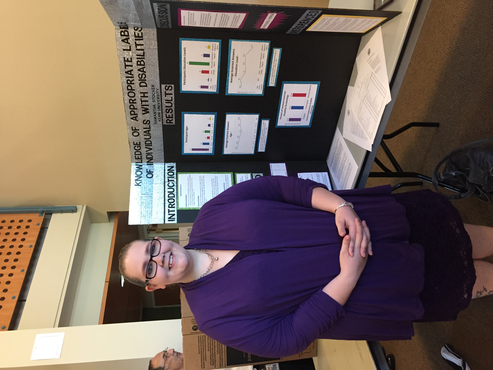

Samantha Feinen's Portfolio

About Me
My name is Samantha, but most people call me Samii. My pronouns are she/her.
I am currently looking to secure a position as a Web Developer to follow my dreams of becoming a professional coder.
In my free time I enjoy spending time with my friends and family. I also enjoy traveling, playing music, and video games.
It is my dream to become a video game developer one day.
Thank you for taking the time to visit my portfolio, and please let me know if you have any questions.
Education
- Certificate - TrueCoders - 2022
- MBA: Business Administration - Western Governors University - 2019-2020
- Masters of Science: Human Resource Management - Thomas Edison State University - 2016-2017
- Bachelor of Arts: Psychology - Kean University - 2014-2015
- Associate of Arts: General Studies: Humanities - Ocean County College - 2010-2014
- Associate of Applied Science: American Sign Lanaguage Interpreting- Ocean County College - 2010-2013
Work Experience
- Office Administrator / HR Associate - Dwyer Services - 06/2020 - 11/2021
- Recruiter - RandstadUSA - 06/2019 - 06/2020
- ADA Specialist - PRIDE Industries - 07/2013 - 04/2019
Additional Training
- Python Essential Training - LinkedIn Learning - 2022
- Open Source Coding - The Odin Project - 2022
- Various Web Development Topics - FreeCodeCamp - 2022
For a copy of my recent resume, Click Here!
Contact Me